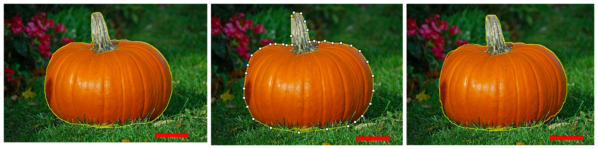
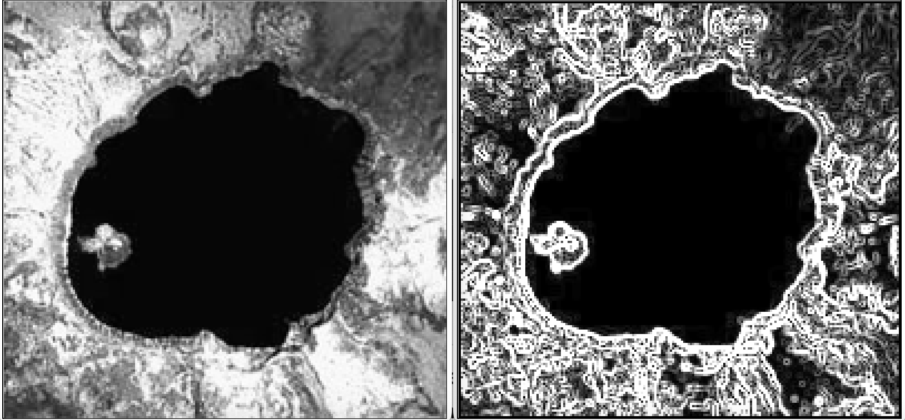
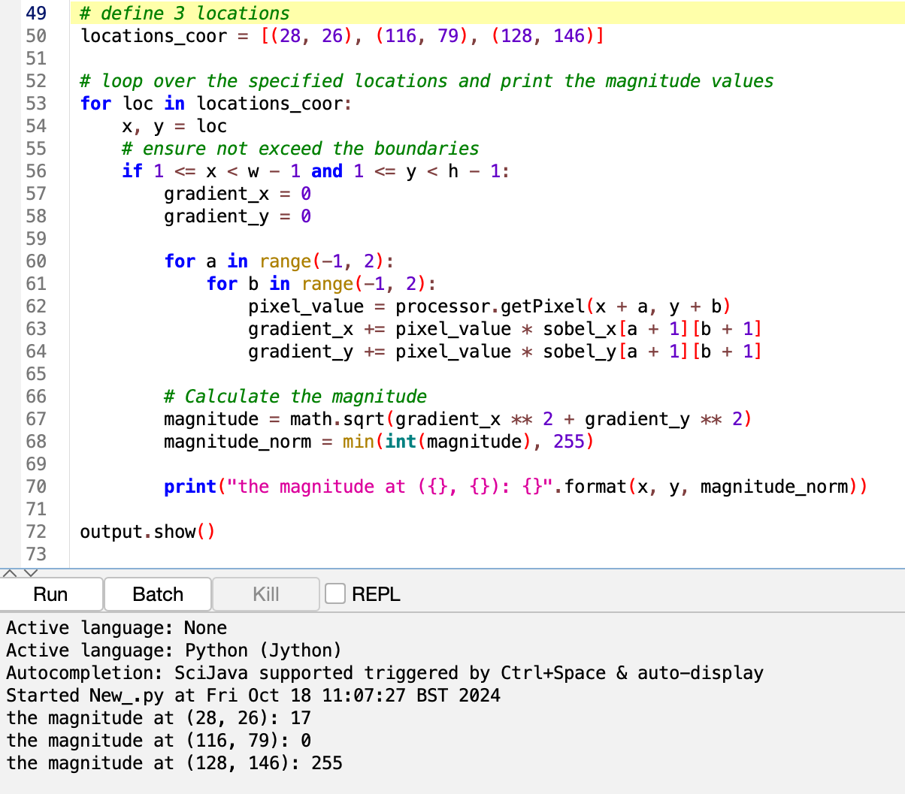
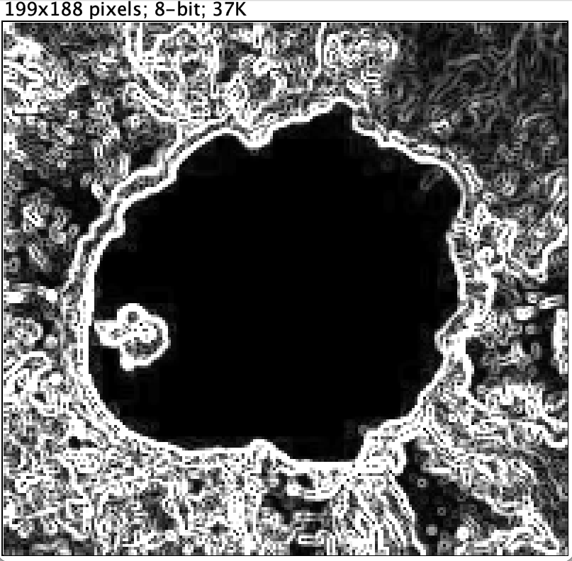

Table of content: - 1. ImageJ selection tools - 2. Detecting edges - 3. Testing code
Open image in ImageJ 1. Drag your image to the Fiji
tool bar or select File > Open from the top menu. 2. You
could see a seperate image window immediately if the image is a standard
format.
Set Scale Using an Existing Scale Bar - apply to all
methods 1. Use the straight line selection tool, drag out a line across
the red scale bar throughly. 2. Selet
Analyze > Set Scale... to open the Set Scale window. The
distance in pixels you just selected will be displayed. Enter
1 for Known Distance, enter cm for Unit of
Length. You should see the scale is presented in this unit:
pixels/cm. (in this case, approximately 80 pixels/cm) 3.
You could redo your line if you are not happy with it. Click
OK to set scale and the pop-up window will disappear
automatically. 4. To check the scale you set, draw a straight line
across the scale bar again, measure the length, you should get something
very close to 1cm in the results window.
Use 3 different manual tools for area calculation 1.
The first four tools in the ImageJ toolbar are area selection tools,
consider the shape of pumpkin and stalk, I will use
Selection Brush (under Oval tool drop-down list),
Polygon and Freehand.
2. Create the
selection >Selection Brush >Use a circular brush
to adjust the shape of your selection. Click inside the selected area
and drag the brush around the boundary to expand a selection. Click
outside and drag the brush inward to shrink the selection area.
Polygon >Click repeatedly with the mouse to create a
series of line segments along the boundary and click the small mox at
the starting point (or double click to auto-create the last segment) to
create an irregularly shaped selection. Freehand
>Dragging with the mouse along the boundry to create the
selection
 Fig.1 - the seletion areas created using above 3 tools (left: Selection Brush, middle: Polygon, right: Freehand)
Analyze the area 1. From the top menu select
Analyze > Measure, the area will show in the area column
in the Results window (unit: cm^2 as the scale has been set as cm).
The orgianll results are shown in the below table:
Table 1. The numerical results for each method. | Tool | Area (square cm) | | ———– | ———– | | Selection Brush | 8.920 | | Polygon | 8.968 | | Freehand | 8.950 |
The results of measured area using above three methods didn’t show much variance, however, in this case I think Polygon area selection tool would be the most appropriate tool to do the selection. The selection brush is the most time-consuming tool in this case, since the radius of the circular brush is quite small, and you need to draw the entire selection area to expand the selection, but this tool is easy to erase or adjust the selection by shrinking the border. Selection brush would be suitble for small objects for its high accuracy. Freehand tool is easy to use, however, when dragging the mouse, our hands would shake, lead to errors and inaccuracy and uncertainties (i.e., if repeat the processes for each tool, the results given by freehand tool would vary each time, while the other tools can be quite consistent). The polygon tool is easy to use as well, and instead of holding and dragging the mouse, clicking makes it much more comfortable to use. The length and direction of segments can be adjust based on the shape, provide a high accuracy among all manual selection tools. The accuracy can be simply improved by increasing the number of segments. ## 1. b - Volume - How to estimate the volume?
One common way is to assume the pumpkin resembles an ellipsoid and calculate its volume using this equation: $$ V = \frac{4}{3} \pi \times \frac{D_1}{2} \times \frac{D_2}{2} \times \frac{H}{2} $$
where D1 and D2 are the major and minor diameters, and H is the
height, all can be obtained using Straight Line tool in Fiji.
- How
to improve accuracy from image capture process?
Capture multiple images from different angles (e.g., top and side views) and use those to estimate dimensions more precisely. More images being captured means more information, since images are 2-dimentional, while volume is a 3-dimentional concept, images from different angles can be used to simulate 3-dimentional features, the increasing number of captured images will contribute to a finer resolution of the 3D virtual model.
Script in Fiji for Sobel edge detector
from ij.gui import NewImage
from ij import IJ
import math # need to use sqrt function to calculate the magnitude
lake_grayscale = IJ.getImage() # get the grayscale image
processor = lake_grayscale.getProcessor() # get the pixels
# get the width and height of the image
w = processor.getWidth()
h = processor.getHeight()
# create an output image for the edge magnitude - it's important to keep the input image safe.
output = NewImage.createImage("Sobel Edges Detection", w, h, 1, 8, NewImage.FILL_BLACK)
output_processor = output.getProcessor() # get output pixels
# define 3*3 Sobel kernels as instructed for x and y directions
# x direction
sobel_x = [[1, 0, -1],
[2, 0, -2],
[1, 0, -1]]
# y direction
sobel_y = [[1, 2, 1],
[0, 0, 0],
[-1, -2, -1]]
# loop over the pixels while avoiding the borders
for x in range(1, w - 1):
for y in range(1, h - 1):
# apply sobel x and sobel y kernels
gradient_x = 0
gradient_y = 0
for a in range(-1, 2):
for b in range(-1, 2):
pixel_value = processor.getPixel(x + a, y + b)
gradient_x += pixel_value * sobel_x[a + 1][b + 1]
gradient_y += pixel_value * sobel_y[a + 1][b + 1]
# calculate the magnitude of the gradient to combine the outputs
magnitude = math.sqrt(gradient_x ** 2 + gradient_y ** 2)
# ensures no pixel value exceeds 255, keeping the image compatible with 8-bit grayscale standards (0 to 255)
magnitude_norm = min(int(magnitude), 255)
output_processor.putPixel(x, y, magnitude_norm)
output.show() Fig.2 - Input image (left) and the output image (sobel edge filered, right), high values indicating a strong vertical edge in the image.
 Fig.3 - Screenshot of Fiji interface.
Magnitude at certain locations >the magnitude at (28, 26): 17 >the magnitude at (116, 79): 0 >the magnitude at (128, 146): 255 ****
1. Apply established Sobel edge detectors to the same input image and compare the output images
Using other known implementations and compare the output images As
for Sobel edge detector, here are several trusted and well known
implementations (e.g., OpenCV, Skimage, Find edge in Fiji…). Run these
operators using the same input image which being used in Q2. Then
compare the output images pixel by pixel, if the output images match,
the code is likely working well. If there is difference between output
images, indicates potential issues in the script. In this case, I
applied build-in Sobel detector in Fiji. According to Fiji
Documentation (link to the website), the
Process > Find Edges tool in Fiji uses a Sobel edge
detector (Two 3x3 convolution kernels are used to generate vertical and
horizontal derivatives. The final image is produced by combining the two
derivatives using the square root of the sum of the squares.) which is
exactly the same method as instructed in Q2. The output image matches
with the output image created by script, so the script is working
correctly.
 Fig.4 - The output image using Find Edges processor in Fiji.
2. Test the script with simple and well-known test images and compare the expected output and the actual output image
Run the same script but use simpler input images/ edge features, the expected output would be easy to predict (simple image with distinct vertical and horizontal edges). Check if the Sobel edge detector correctly detects edges. If the actual output is as expected, the script is working.
3. Pick several random pixels, calculate the magnitudes manually and compare with the results given by the script
In this case, manually calculate the magnitudes for these locations: (28, 26), (116, 79), and (128, 146) as we’ve got the results previously. First obtain the pixel values, then follow the method to calculate the magnitudes for each pixels. Then compare the results with the results given by running the script (Q2.b), if these values match, then the script is likely correct.
Problem causes:
Biggest security issues with running third party plugins are these 3 in order of importance:
When you are choosing to use plugins developed by a third party, you are trusting that third party to follow appropriate security standards and to not behave maliciously. Deploying code and resources from third parties adds additional security and privacy risk, i.e.:
If a third-party is compromised, it is possible a threat actor could compromise the supply chain of the plugin or product that they use, and then ship malicious code to the users of their product - programming language packages, dependencies, and other tools can all be susceptible to a compromised supply chain. Running third party plugins also have security risks when security vulnerabilities are disclosed, although trusted platforms and sources may be less susceptible, the risks are still there.
To minimise the threat: - Keep all packages up to date, as updates provide patches that fix known security issues, including security vulnerabilities exploited in the wild in cyber attacks. Keep the systems that run this code up to date as well, like operating systems and antimalware. - Ensure that using these addons are necessary and for their purpose and routinely assess the needs. - Run third-party tools and code in an untrusted, unprivileged environment to reduce their impact in a security incident.
Problem causes: Due to the natural of open-source applications, everyone can write plugins and publish them online. You could found tons of different source files for one plugin function, therefore it’s quite tricky to pick high-quality plugins or packages. As for transparency issues, when utilising installed plugins, we won’t see what’s going on in the backstage, plugins can act as “black-boxes”, you may not be able to fully understand the image data processing processes and what assumptions they’ve set in the source code when conducting calculations. If you missed some important parameter information/ definition, and thought the plungin will act exactly as you assumed or expected, your won’t realise the results might be biased.
Approaches to mitigate potential problems: When choosing plugins, read the comments to see the reviews. Always read the plugin’s documentation. If possible, read the source code as well to get a better understanding of how it operates. Review the logic to ensure it aligns with your requirements. Alternatively, run the plugin with simple, controlled inputs to evaluate its performance and validate its output.
Here is the end, thanks for reading. 18 Oct 2024